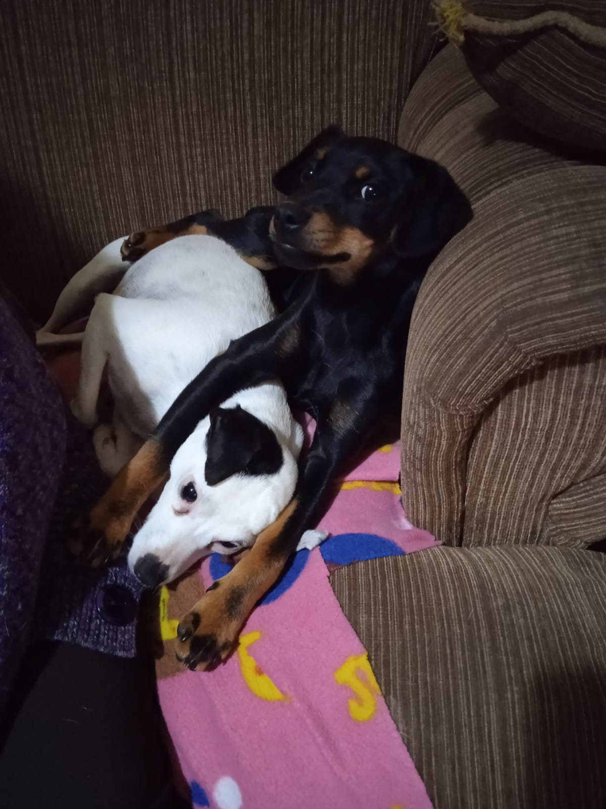

-Los textos amarillos son links a las ubicaciones de las tiendas.
-Todos rondan los 30 algo hacia abajo.
No esta es especifico, hay muchos personajes joyas. Es dificil de encontrar en tiendas grandes pero esta en una llamada Padawan Store que ende muchas cosas bakanes. Tambíen esta en la tienda del entrepiso que conoce la Laura
- Ubicación Pawadan Comic & Toys -En general cualquier cosa que venga de la tienda del entrepiso o de Padawan Toys es el medio regalo. No importa que
Puede ser de Star wars o de Minecraft, no importa el tamaño estan todos filete
Jueguito de mesa que se puede encontrar en varias tiendas grandes como falabella además de tambien la tienda Winterland en el centro
- Ubicación Winterland -Para pintar modelitos 3d. No sé bien donde encontrarlo en Puerto, el papa puede saber. Más de 30 algo no vale la pena
Pop del spiderman original pero los de aca abajo tambien estan muy buenos, en la esquina superior derecha tienen un numero unico. Pueden estar tanto en la tienda de Padawan toys como la tienda bakan del entrepiso
- Ubicación Pawadan Comic & Toys -Si todo falla, matería por 0.6 hectareas de plastico PLA (Marca: Creatility, esun) o pintura negra